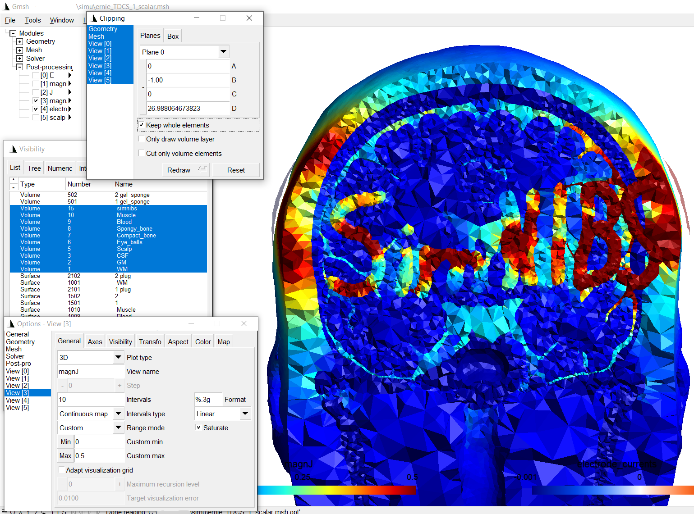

How to manually edit a head model¶
This example demonstrates how to manually edit a head model to improve the results of the automated segmentation pipeline or to add additional tissue types, e.g. to model pathologies.
1) Edit the label image¶
We need to edit the label image “tissue_labeling_upsampled.nii.gz” in the subfolder “label_prep” of the m2m-folder of the subject. It’s a good idea to make a copy of the image before editing it:

Afterwards, use an editor of your choice, your custom script or whatever you prefere to update the label image. Here, I’ve manually added “SimNIBS” using a new tissue type 15. This was done using FreeSurfer’s freeview and a few lines in python to extend the thickness of the letters in anterior-posterior direction (code not listed here):

2) Recreate the mesh¶
Next, we need to update the head mesh by running on the command line:
charm ernie --mesh
3) Check the updated mesh¶
The updated head mesh can be checked by clicking on the final segmentation viewer in the results.html (to be found in the m2m-folder of the subject), or alternatively also with gmsh:

4) Run simulations¶
When the manual edit only updated existing tissue labels, e.g. to improve the automatic segmentation results, the simulations can be run as usual using the GUI or python and matlab scripts. In case new tissue labels were added (tissue type 15 in this example), we have to define its conductivity:
Python
from simnibs import sim_struct, run_simnibs S = sim_struct.SESSION() S.subpath = 'm2m_ernie' S.pathfem = 'simu' S.fields = 'eEjJ' # save e-field and current density # add a TDCS simulation tdcs = S.add_tdcslist() tdcs.currents = [0.001, -0.001] # Current flow though each channel (A) # the new tissue was added using label number 15. # We need to assign a conductivity to this tissue label. # Note: Python indexing starts with 0, thus the conductivity has # to be assigned to index 14 of the conductivity list tdcs.cond[14].value = 10 # [S/m] tdcs.cond[14].name = 'simnibs' electrode1 = tdcs.add_electrode() electrode1.channelnr = 1 electrode1.centre = 'FC5' electrode1.shape = 'ellipse' electrode1.dimensions = [50, 50] electrode1.thickness = 4 electrode2 = tdcs.add_electrode() electrode2.channelnr = 2 electrode2.centre = 'FC6' electrode2.shape = 'ellipse' electrode2.dimensions = [50, 50] electrode2.thickness = 4 # Run simulation run_simnibs(S)
MATLAB
S = sim_struct('SESSION'); S.subpath = 'm2m_ernie'; S.pathfem = 'simu'; S.fields = 'eEjJ'; % save e-field and current density % add a TDCS simulation S.poslist{1} = sim_struct('TDCSLIST'); S.poslist{1}.currents = [1e-3, -1e-3]; % Current going through each channel, in Ampere % the new tissue was added using label number 15. % We need to assign a conductivity to this tissue label. S.poslist{1}.cond(15).value = 10; % in S/m S.poslist{1}.cond(15).name = 'simnibs'; % define first electrode S.poslist{1}.electrode(1).channelnr = 1; S.poslist{1}.electrode(1).centre = 'FC5'; S.poslist{1}.electrode(1).shape = 'ellipse'; S.poslist{1}.electrode(1).dimensions = [50, 50]; S.poslist{1}.electrode(1).thickness = 4; % define second electrode S.poslist{1}.electrode(2).channelnr = 2; S.poslist{1}.electrode(2).centre = 'FC6'; S.poslist{1}.electrode(2).shape = 'ellipse'; S.poslist{1}.electrode(2).dimensions = [50, 50]; S.poslist{1}.electrode(2).thickness = 4; % Run simulation run_simnibs(S)
The simulation results with the new tissue:
Further notes¶
Tissue labels have to be lower than 99
Please see add_tissues_to_upsampled for an example on how to upsample a custom volume mask from the original resolution of the T1 image to the resolutoin of the “tissue_labeling_upsampled.nii.gz” image